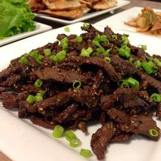

Beef Bulgogi

Description
Delicious Beef Bulgogi recipe with a little bit of hot pepper paste.
Best served with rice and lettuce!
Ingredients
- 1 pound flank steak, thinly sliced
- 5 tablespoons soy sauce
- 2.5 tablespoons white sugar
- 1/4 cup chopped green onion
- 2 tablespoons minced garlic
- 2 tablespoons sesame seeds
- 2 tablespoons sesame oil
- 1/2 tablespoon ground black pepper
Instructions
Step 1
- Place the beef in a shallow dish. Combine soy sauce, sugar, green onion, garlic, sesame seeds, sesame oil, and ground black pepper in a small bowl. Pour over beef. Cover and refrigerate for at least 1 hour or overnight.
Step 2
- Preheat an outdoor grill for high heat, and lightly oil the grate.
Step 3
- Quickly grill beef on hot grill until slightly charred and cooked through, 1 to 2 minutes per side.